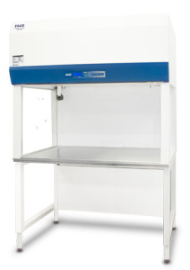

Airstream® Horizontal Laminar Flow Clean Benches

Horizontal Laminar Flow Clean Bench offers proven protection for your samples and processes.
General
Esco Airstream Horizontal Laminar Flow Clean Bench offers proven protection for your samples and processes. With thousands of units in use worldwide, this model offers a sensible balance of quality and performance features. Like all Esco clean benches this model features many key innovations for which Esco is recognized: mini-pleat separatorless ULPA filter technology, the best product protection in the world, external rotor motors, superior filter mechanical construction.
Feature
- ULPA filters (per IEST-RP-CC-001.3) tested to a typical efficiency of >99.999% for 0.1 to 0.3 micron particles are better than HEPA filters. ULPA filters last as long as conventional HEPA filters and have similar replacement costs.
- All Esco laminar flow clean benches provide ISO Class 4 air cleanliness within the work zone as per ISO 14644.1, significantly cleaner than the usual Class 5 classification on clean benches offered by the competition.
- The intelligent blower system maintains airflow as the filter becomes loaded, ensuring optimum efficiency and product protection.
- An additional disposable pre-filter traps large particles in the inflow air prior to reaching the main filter, protecting against damage and prolonging filter life.
- All Esco products are manufactured for the most demanding laboratory applications. All components are designed for maximum chemical resistance and enhanced durability for a long service life. The main body of the clean bench is constructed of industrial grade electro-galvanized steel.
- One-piece, formed stainless steel work surface with a curved front edge is designed for maximum operator comfort.
- Built-in warm white, electronically ballasted, 5000k lighting provides excellent illumination of the work zone and reduces operator fatigue. The reliable lighting system is zero-flicker and instant start.
- Esco Laminar Flow Clean Benches have been tested for cross-contamination and product protection using microbiological test methods specified in EN12469.
- Each clean bench is individually factory tested for safety and performance in accordance with international standards.
- Most of electrical components are UL listed or UL recognized, ensuring superior electrical safety for the operator.
- Esco ISOCIDE antimicrobial coating on all painted surfaces.
Esco offers a variety of options and accessories to meet local applications. Contact Esco or your local Sales Representative for ordering information.
Support Stands
- Fixed height, available 711 mm (28″) or 860 mm (34″)
- With leveling feet (SPL)
- With casters (SPC)
- Adjustable height, hydraulic range 711 mm (28″) to 860 mm (34″)
- Manual or electrical lift (SPM)
- With casters
Electrical Outlets and Utility Fixtures
- Electrical outlet, ground fault, North America
- Electrical outlet, Euro/ Worldwide
- Petcock (air, gas, vacuum)
- North America (American) style
- Euro/Worldwide style DIN 12898, DIN 12919, DIN 3537
Cabinet Accessories
- Germicidal UV lamp
- Transparent front cover (recommended when UV lamp is used)
- PVC armrest
- Height-adjustable lab chair
- Ergonomic foot rest
- IV bar, with hooks
| Model No. | External Dimensions (mm) | Internal Dimensions (mm) | Airflow Velocity (Inflow) | Airflow Velocity (Downflow) | Electrical |
| AHC-2D1 | 730 x 797 x 1105 | 575 x 625 x 575 | - | 0.45(m/s) /90(fpm) | 220-240 V,AC, 50 Hz,1 ø |
| AHC-2D2 | 110-120 V,AC, 60 Hz,1 ø | ||||
| AHC-2D3 | 220-240 V,AC, 60 Hz,1 ø | ||||
| AHC-3D1 | 1035 x 797 x 1105 | 880 x 625 x 575 | - | 0.45(m/s) /90(fpm) | 220-240 V,AC, 50 Hz,1 ø |
| AHC-3D2 | 110-120 V,AC, 60 Hz,1 ø | ||||
| AHC-3D3 | 220-240 V,AC, 60 Hz,1 ø | ||||
| AHC-4D1 | 1340 x 797 x 1105 | 1185 x 625 x 575 | - | 0.45(m/s) /90(fpm) | 220-240 V,AC, 50 Hz,1 ø |
| AHC-4D2 | 110-120 V,AC, 60 Hz,1 ø | ||||
| AHC-4D3 | 220-240 V,AC, 60 Hz,1 ø | ||||
| AHC-5D1 | 1645 x 797 x 1105 | 1490 x 625 x 575 | - | 0.45(m/s) /90(fpm) | 220-240 V,AC, 50 Hz,1 ø |
| AHC-5D2 | 110-120 V,AC, 60 Hz,1 ø | ||||
| AHC-5D3 | 220-240 V,AC, 60 Hz,1 ø | ||||
| AHC-6D1 | 1950 x 804 x 1175 | 1795 x 632 x 575 | - | 0.45(m/s) /90(fpm) | 220-240 V,AC, 50 Hz,1 ø |
| AHC-6D2 | 110-120 V,AC, 60 Hz,1 ø | ||||
| AHC-6D3 | 220-240 V,AC, 60 Hz,1 ø |